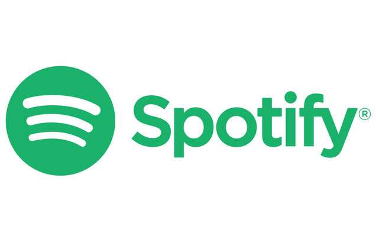
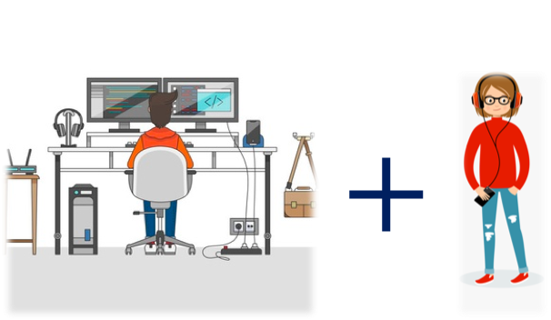

It is a website that introduces music that are not listed on Apple Music or Spodify and allow users to sponsor listed artists.

The objective of the website is to give opportunities for talented musicians who make good music but lack exposure to get sponsored by people and get more exposure. Also, it will allow music lovers to discover talent musicians and their new songs. Ultimately, it will function as a bridge that helps talented artists to overcome the high barrier to enter the industry.
I am targeting people who are interested in listening to unique songs, discovering new songs, and supporting talented artists both financially and in non-financial ways.

Back to Top